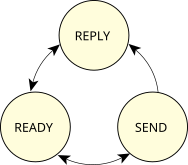

Imagine an application reading data from the filesystem. In QNX lingo, the application is a client requesting the data from a server.
pid tid name prio STATE Blocked
4 1 devc-pty 10r RECEIVE 1
In the above sample, the pseudo-tty server (called
devc-pty) is
process ID 4, has one thread (thread ID 1), is running at priority 10 Round Robin,
and is receive-blocked, waiting for a message from channel ID 1 (we'll see
all about channels
shortly).
When a message is received, the server goes into the READY
state, and is capable of running.
If it happens to be the highest-priority READY process,
it gets the CPU and can perform some processing.
Since it's a server, it looks at the message
it just got and decides what to do about it.
At some point, the server will complete whatever job the
message told it to do, and then will reply
to the client.
Let's switch over to the client. Initially the client was running along, consuming CPU, until it decided to send a message. The client changed from READY to either send-blocked or reply-blocked, depending on the state of the server that it sent a message to.

Generally, you'll see the REPLY-blocked state much more often than the SEND-blocked state. That's because the REPLY-blocked state means:
The server has received the message and is now processing it. At some point, the server will complete processing and will reply to the client. The client is blocked waiting for this reply.
Contrast that with the SEND-blocked state:
The server hasn't yet received the message, most likely because it was busy handling another message first. When the server gets around toreceivingyour (client) message, then you'll go from the SEND-blocked state to the REPLY-blocked state.
In practice, if you see a process that is send-blocked it means one of two things:
This is a normal situation; you can verify it by running pidin again to get a new snapshot. This time you'll probably see that the process is no longer send-blocked.
When this happens, you'll see many processes that are send-blocked on one server. To verify this, run pidin again, observing that there's no change in the blocked state of the client processes.
pid tid name prio STATE Blocked
1 1 to/x86_64/sys/procnto-smp-instr 0f READY
1 2 to/x86_64/sys/procnto-smp-instr 10r RECEIVE 1
1 3 to/x86_64/sys/procnto-smp-instr 10r NANOSLEEP
1 4 to/x86_64/sys/procnto-smp-instr 10r RUNNING
1 5 to/x86_64/sys/procnto-smp-instr 15r RECEIVE 1
16426 1 esh 10r REPLY 1
This shows that the program esh (the embedded shell) has sent a message to process number 1 (the kernel and process manager, procnto-smp-instr) and is now waiting for a reply.
Now you know the basics of message passing in a client/server architecture.
So now you might be thinking, Do I have to write special QNX OS
message-passing calls just to open a file or write some data?!?
under the hood(which I'll talk about a little later). In fact, let me show you some client code that does message passing:
#include <fcntl.h>
#include <unistd.h>
int main (void)
{
int fd;
fd = open ("filename", O_WRONLY);
write (fd, "This is message passing\n", 24);
close (fd);
return (EXIT_SUCCESS);
}
See? Standard C code, nothing tricky.
The message passing is done by the QNX OS C library. You simply issue standard POSIX 1003.1 or ANSI C function calls, and the C library does the message-passing work for you.
In the above example, we saw three functions being called and three distinct messages being sent:
We'll be discussing the messages themselves in a lot more detail when we look at resource managers (in the Resource Managers chapter), but for now all you need to know is the fact that different types of messages were sent.
Let's step back for a moment and contrast this to the way the example would have worked in a traditional operating system.
The client code would remain the same and the differences would be hidden by the C library provided by the vendor. On such a system, the open() function call would invoke a kernel function, which would then call directly into the filesystem, which would execute some code, and return a file descriptor. The write() and close() calls would do the same thing.
So? Is there an advantage to doing things this way? Keep reading!